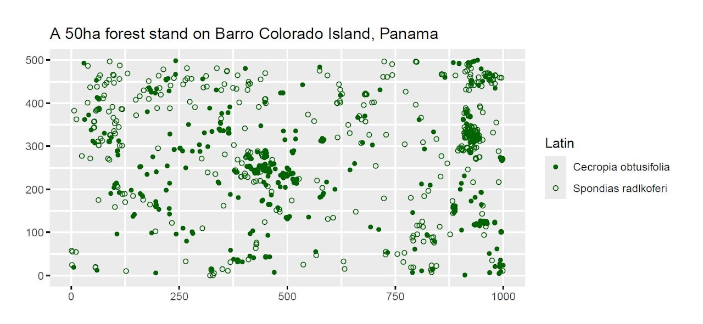
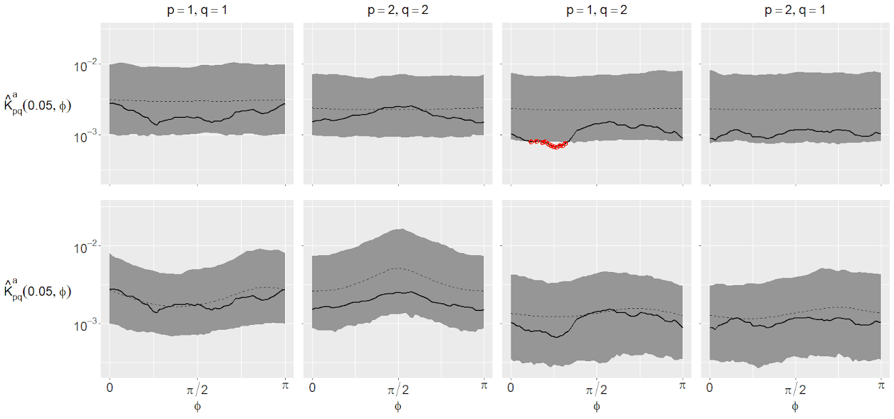

Multivariate Geometric Anisotropic Cox Processes
Extending geometric anisotropy to multivariate spatial point processes, with an application to tropical forest ecology.

When modelling spatial point pattern data, we often have to account for either non-stationarity or anisotropy (or both) – essentially, allowing for the statistical properties of the data to vary with translations or rotations of the observation window.
Geometric anisotropic Cox processes [1] are great for modelling point patterns with directional clusters (i.e. those that display rotational heterogeneity). This is particularly useful in ecological modelling, for instance in replicating clusters of trees in a forest, where directionality can arise due to environmental factors, such as the presence of a river, or a prevailing wind that aids seed dispersal.
So far, this methodology has been restricted to univariate point patterns (e.g. a single tree species). In this work, we show how to include anisotropy in the joint dependence of a multivariate log-Gaussian Cox process. This allows us to model e.g. pairs of species where the interspecific dependence is directional. This relationship has been observed in nurse-plant relationships, where one species (the 'nurse') gives cover to another species whilst the latter is in their seedling/juvenile stages.
We give conditions under which a multivariate LGCP (driven by a Matérn covariance function) can display multivariate anisotropy, and we develop methods for estimating both the anisotropy and covariance parameters. We also demonstrate our model on two species in the widely-studied BCI tropical forest data, successfully replicating between-species anisotropy where an otherwise-equivalent isotropic model fails to do so!
[1] J. Møller & H. Toftaker (2014) Scand. J. Stat, 41, 414–435

Links
- Paper J.S. Martin, D.J. Murrell and S.C. Olhede. Multivariate Geometric Anisotropic Cox Processes. Scandinavian Journal of Statistics, 50(3): 1420–1465, 2023. doi:10.1111/sjos.12640
- Code github.com/jsmartinstats/MVGA-LGCPs
- Poster RSS International Conference 2024, Brighton. Download poster (PDF)